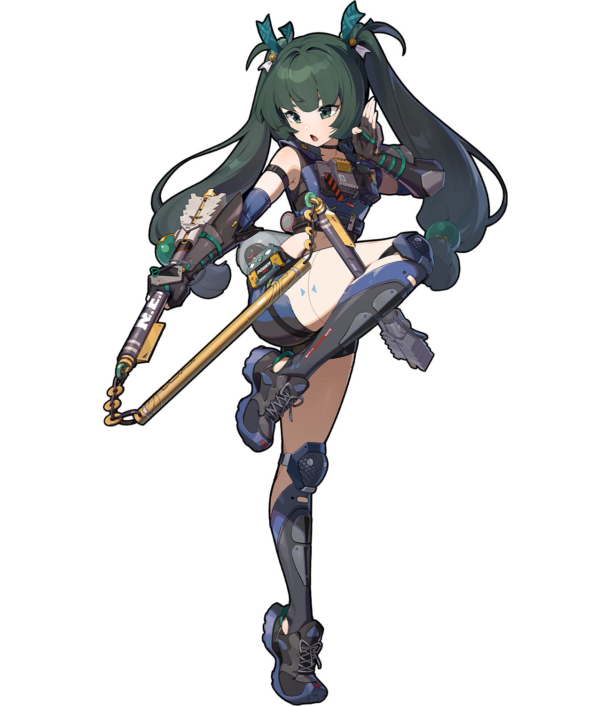

校园分区
积极向上，阳光，分享独属于你的故事
学习心得，知识科普，校园趣事等内容

大别野分区
畅所欲言交流区
空旷的大草坪上，欢迎各位小伙伴前来玩耍，畅所欲言，欢迎你前来交流

脑洞分区
这是一个硬核分区，包的
新奇，有趣，好玩的内容，或者脑海灵光一现的奇思妙想，欢迎你的加入
积极向上，阳光，分享独属于你的故事
学习心得，知识科普，校园趣事等内容
畅所欲言交流区
空旷的大草坪上，欢迎各位小伙伴前来玩耍，畅所欲言，欢迎你前来交流
这是一个硬核分区，包的
新奇，有趣，好玩的内容，或者脑海灵光一现的奇思妙想，欢迎你的加入